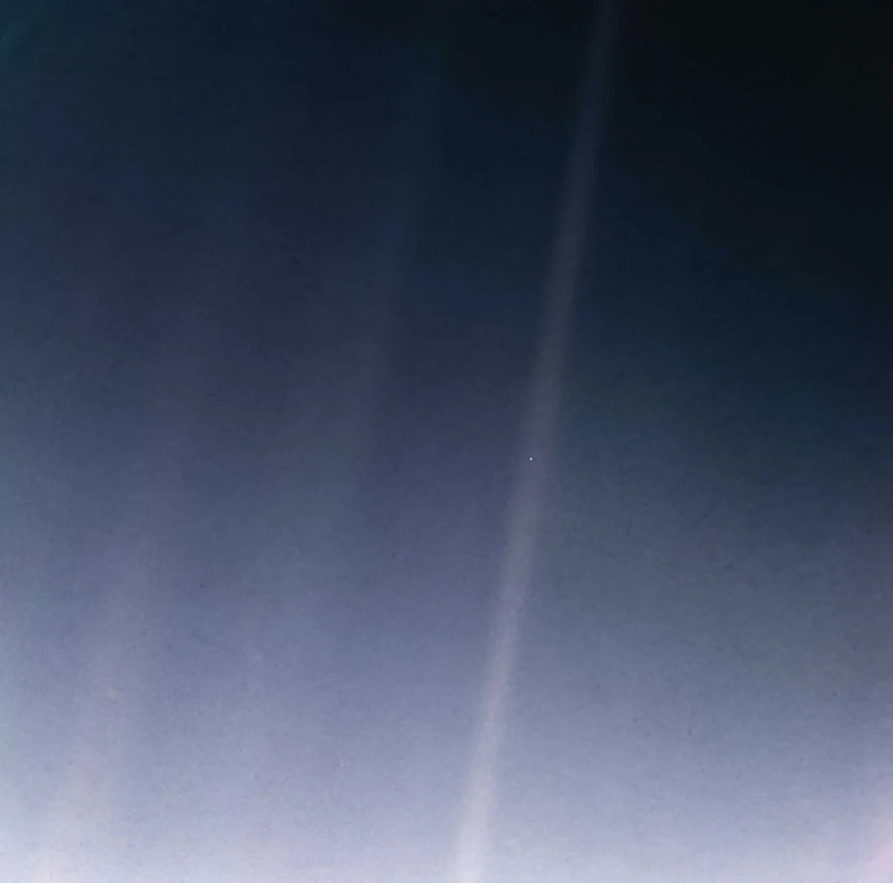

Ebiya Aidu
Ebiya AiduAs I write this, today, in 2026, we have sunk into a way of living that chases instant gratification. We no longer know how to wait, and we stay afloat on hits of adrenaline, supplied by apps that compete with one another to give us that false happiness. They are very good at what they do, and now, in the age of artificial intelligence, even more so. I think things will not get better, but that is another subject. What they are really fighting over is the most valuable thing we have: our time, which is probably the only thing that never comes back.
This document is not meant to be read with that mindset, so stop for a moment. Read slowly. Try to grasp the depth of the words I am writing, so that you feel their full meaning.
What is the meaning of life?
Honestly, it has none. I think it is up to each of us to find one. This may look like an obsession with finding a purpose, and the absurdists would laugh: for them, our obsession with purpose is a distraction from the absurdity of existence. Like Albert Camus, I partly consider myself an absurdist, but another part of me keeps looking for something. It is probably the curious part of me, the one that refuses to accept that everything is completely absurd, and so I am always looking for the cat’s fifth paw, as we say in Spanish (hunting for something that may not exist). Still, there can be a balance between the two. So I think this search is something innate in me.
When was the last time you stopped to reflect?
What is important in life? When you are about to die, will you remember all your achievements? I doubt it. You will probably want to be surrounded by the people who love you. What use are a hundred achievements if you have connected with no one? The connections you build in this fleeting life are what matters. How lucky am I, given the odds of being alive at all, to be alive, and on the same timeline as my friends? And as all the people I could meet and will meet? And the ones I will never see again? Goodbyes are hard, and perhaps selfish, because we want to spend more time together, but that is precisely what gives life its value: making the most of that time.
Stop for a moment and listen to this song. Appreciate the moment. It will not come back: you will never be as young as you are right now, while you read this. Invest it well.
Reality is bigger than we think
Reality is much bigger than the one we think about in our day-to-day. You get up, you eat, you work, you study, you spend time with the people you love… and you go back to sleep. And you repeat. On a larger scale, from the day you are young until the day you die. That is the reality we experience, but reality itself is far bigger.

Look again at that dot. That’s here. That’s home. That’s us. On it everyone you love, everyone you know, everyone you ever heard of, every human being who ever was, lived out their lives … a very small stage in a vast cosmic arena.
Reality is a concept whose full breadth is very hard to grasp. But the effort is necessary: it helps us put the importance of things into perspective. We are a speck of dust suspended in space, as Sagan says. And yet:
We are the universe, each one of us, observing itself.
Humans are made to create, not to consume.
Original version in Spanish (temporary)
A día de hoy, mientras escribo esto, en 2026, nos hemos sumergido en un modo de vivir que busca la satisfacción instantánea. No sabemos esperar y nos mantenemos a flote con chutes de adrenalina que distintas aplicaciones se disputan para darnos esa falsa felicidad. Son muy buenas en lo suyo y, ahora, en la era de la inteligencia artificial, todavía más. Creo que la situación no irá a mejor, pero eso es otro tema. En realidad luchan por quitarnos lo más valioso que tenemos: nuestro tiempo, que probablemente es lo único que no vuelve.
Este documento no está hecho para leerse con ese mindset, así que párate un momento. Lee con calma. Intenta entender la profundidad de las palabras que estoy escribiendo para que sientas todo su significado.
¿Qué sentido tiene la vida?
Realmente no tiene ninguno. Creo que es la misión de cada uno encontrarlo. Puede parecer una obsesión con encontrar un propósito, y los absurdistas se reirían: para ellos, la obsesión humana con el propósito es una distracción frente al absurdo de la existencia. Como Albert Camus, en parte me considero absurdista, pero hay otra parte de mí que intenta buscar algo. Probablemente sea la parte curiosa de mí, que rechaza la idea de que todo sea completamente absurdo y por eso siempre estoy buscándole la quinta pata al gato (algo imposible, absurdo). Aun así, puede haber un cierto equilibrio entre las dos. Por eso creo que buscar esto es algo innato en mí.
¿Cuándo fue la última vez que te paraste a reflexionar?
¿Qué es importante en la vida? ¿Qué pasará cuando vayas a morir? ¿Recordarás todos tus logros? Lo dudo mucho; probablemente querrás estar rodeado de los que te quieren. ¿De qué sirve entonces tener cien logros si no te has relacionado con nadie? Las conexiones que formas en esta efímera vida son lo importante. ¡Qué afortunado soy de, con la probabilidad que hay de estar vivo, vivir, y además en la misma línea de tiempo que mis amigos! ¿Y de todas las personas que puedo conocer y conoceré? ¿Y de las que no volveré a ver? Las despedidas son difíciles, tal vez egoístas, porque queremos pasar más tiempo juntos, pero es precisamente eso lo que da valor a la vida: aprovechar ese tiempo.
Para un poco y escucha esta canción. Aprecia el momento. Es un momento que no vuelve: nunca serás tan joven como en este preciso instante en el que estás leyendo esto. Invíertelo bien.
La realidad es más grande de lo que pensamos
La realidad es mucho más grande que la que pensamos en nuestro día a día. Te levantas, comes, trabajas, estudias, estás con las personas que quieres… y vuelves a dormir. Y repites. En una escala más grande, desde que eres joven hasta que mueres. Es la realidad que experimentamos, pero la realidad como tal es mucho mayor.
Look again at that dot. That’s here. That’s home. That’s us. On it everyone you love, everyone you know, everyone you ever heard of, every human being who ever was, lived out their lives … a very small stage in a vast cosmic arena.
La realidad es un concepto cuya amplitud total es muy difícil de comprender. Pero ese esfuerzo es necesario: nos ayuda a relativizar la importancia de las cosas. Somos una mota de polvo suspendida en el espacio, como dice Sagan. Y sin embargo:
Somos el universo, cada uno de nosotros, observándose a sí mismo.
El ser humano está hecho para crear, no para consumir.